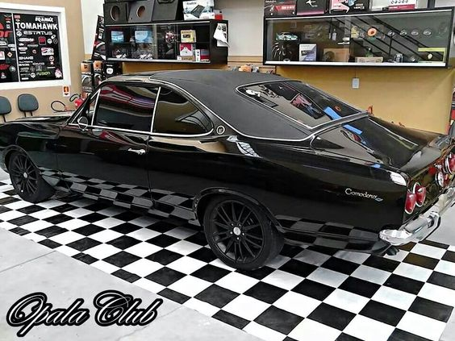
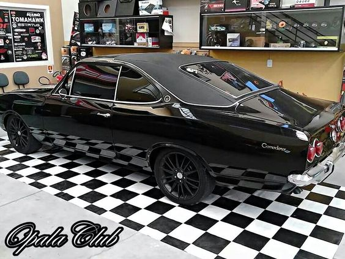
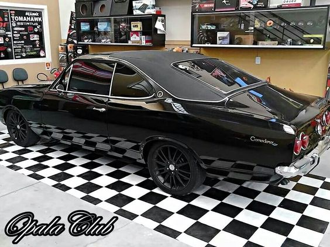

Galeria de opalas
Aqui estara algumas fotos de opalas encotrados na internet
 

Essa pagina foi feita para vc apaixona por opala.
Opala um nome bem conhecido para os brasileiros e amantes do automobilismo mais conhece a verdadeira historia por tras nesse class brasileiro?
Mas sua história se dá muito antes de sua primeira aparição, tendo início com a instalação da planta da GMB – General Motors do Brasil, antes conhecida por Companhia Geral de Motores do Brasil, na cidade de São Caetano do Sul, em 1925. Até o lançamento do modelo, a GM tinha apenas em seu line-up, picapes, utilitários e caminhões, quando o Governo de Juscelino Kubitschek, juntamente com o GEIA – Grupo Executivo da Indústria Automobilística, deu o sinal verde para o desenvolvimento do primeiro Chevrolet nacional.
O Projeto 676 tinha seu inicio, e dele sairia um classico amado por varios brasileiros.
Tendo o aval do governo e da matriz americana, dava-se então o start para a criação do primeiro Opala. A dúvida ficava por quem utilizar para tomar por base nesta nova empreitada. Houveram estudos para se utilizar o Impala, sucesso de vendas nos Estados Unidos, principalmente no modelo Impala 67. ou recorrer a um projeto mais econômico, porém tão carismático quanto o novo modelo seria. A Chevrolet, acabou por optar pela segunda opção e utilizar a base do Opel Rekord. Tendo já uma base para se iniciar o projeto, a GM lança em 23 de novembro de 1966 para a imprensa no Clube Atlético Paulistano, o projeto 676, a primeira geração do mito.
Aqui estara algumas fotos de opalas encotrados na internet
